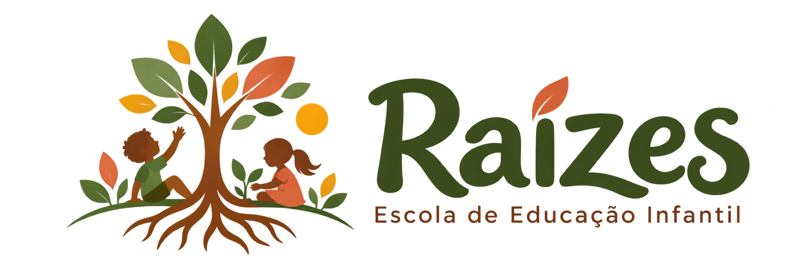

Um encontro de valores
Nossa escola combina com sua família?
Descubra como suas expectativas para a educação infantil se conectam com a proposta pedagógica da Raízes.
Apenas 3 perguntas · Cerca de 1 minuto
Uma pausa breve para pensar no que importa para sua família.
Pilar 01 · Aprendizagem pelo brincar
Não há respostas certas ou erradas — queremos conhecer o que é importante para vocês.
Seu resultado
0%de afinidade
O que mais nos conecta
Este resultado é apenas uma aproximação ilustrativa das preferências informadas, não uma avaliação da criança ou da família.